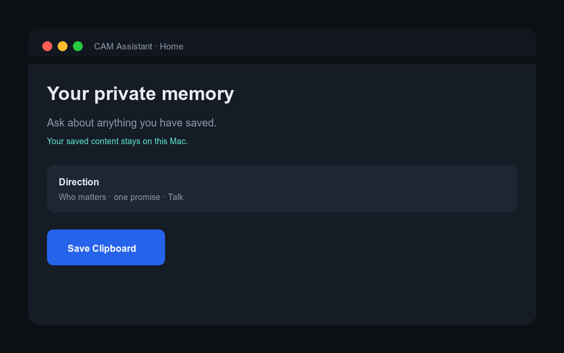
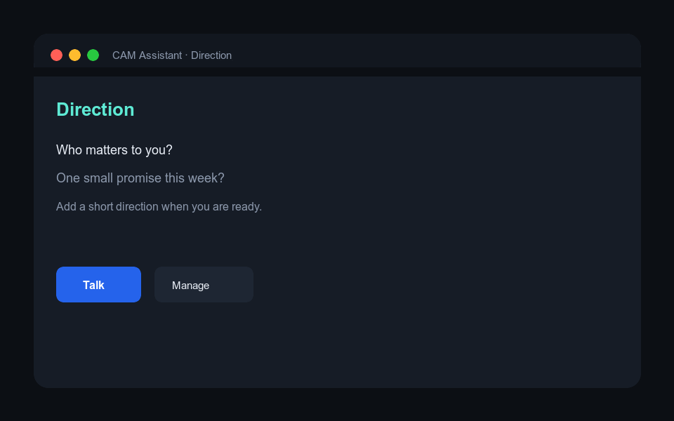
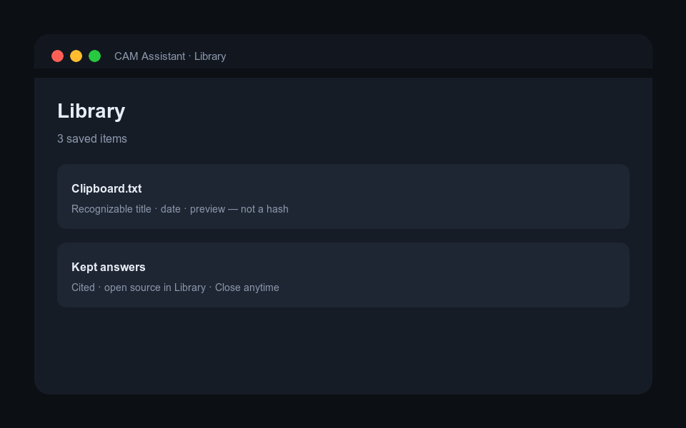
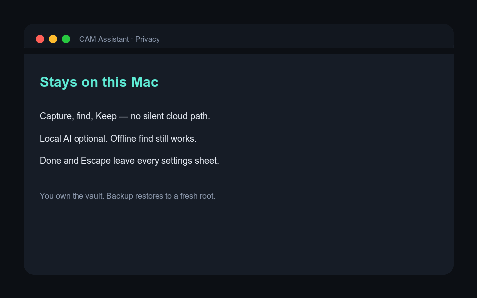

Private memory that stays yours — and a Direction that keeps you aimed.
CAM Assistant is a quiet Mac app for people who capture everything and then can’t find it — and who still need continuity with people and promises, without a cloud chat personality.

What it does
Two jobs, one app. Memory is the body. Direction is a thin face on Home — not a fourth destination, not a companion bot.
Capture without taxonomy
Save Clipboard or watch a folder. Items land in Library with readable titles — not hash-first rows. Hide or restore when clutter wins.
Find with trust
Ask about what you saved. Matching passages work offline. With Local AI ready, answers must cite Library material or admit they can’t.
Direction, lightly
Who matters, one open promise, a north star you own. Mark done, manage, or Talk — partner stance, never romantic companion framing.
Ordinary navigation is only Home, Library, and Settings. Specialist pilots stay off the default path.
Why you would want it
If any of these sound familiar, CAM Assistant is aimed at you.
“I capture everything and lose it.”
Screenshots, clipboard dumps, and folders pile up. Notes apps demand structure. Cloud AI wants the paste. You need findable, sourced memory without becoming a librarian.
“I don’t want this in someone else’s logs.”
Family email, health notes, work drafts, kids’ schedules. CAM’s ordinary path is local-first: capture, exact find, Keep, and backup work without sending content to a network model.
“ChatGPT remembers me — until it doesn’t feel like me.”
Vendor memory is convenient and opaque. CAM keeps people and promises as your inspectable records on disk, and Talk must cite Library or admit absence.
“I drift between urgency and what matters.”
Direction is not a productivity cosplay board. It’s a small strip for real humans and open promises — always visible while you save and find.
Why it’s different
Not another floating chat window. Not a second-brain religion. Not a companion product.
| Need | Typical cloud chat | Notes / second brain | CAM Assistant |
|---|---|---|---|
| Where does my stuff live? | Vendor memory / history | Vault you maintain | On-device vault; backup you control |
| Find without organizing | Scroll the chat | Tags, folders, plugins | Save once → Library → Ask |
| Trust the answer | Fluency without sources | Links if you made them | Citations into Library; Keep is deliberate |
| Offline usefulness | Often blocked | Often yes | Find/Keep without a model |
| People & promises | Prompt residue | Separate apps | Direction strip on Home |
| Product stance | Engagement chat | PKM craft | Partner, not servant / companion bot |
| Escape hatches | Tab forever | Plugin rabbit holes | Done + Escape on sheets; Close on detail |
Local AI (LM Studio / Ollama) is optional for richer synthesis. It is not required to capture, browse, or exact-find.
Visual tour
Short loops of the ordinary product. These are product illustrations of the real Home / Library / Direction language — open the app for live UI.



Get started
Standalone repository — no parent monorepo required.
Run from source
macOS 15+, Swift 6.2 / Xcode tools. Network once for package resolve.
Honest status: Machine gates for barebones + Direction are evidenced in-repo. Human pilots remain open. Not App Store / notarized production by default.